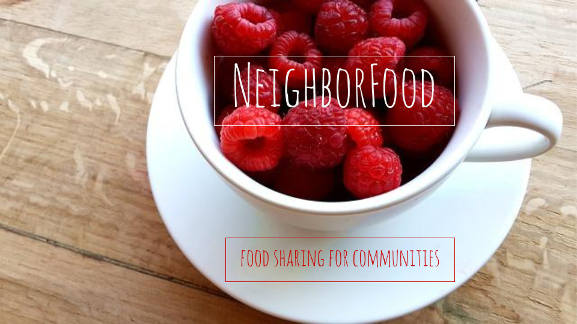

What is NeighborFood?
Someone has extra fruit from their garden. Someone else is hungry. NeighborFood makes it easy for communities to share food, from those who have too much to those who don't have enough.
Impact
52% of fruits and vegetables are lost. Only 48% are consumed. 1 in 6 Americans face hunger. Food waste costs the average American family $1,350 to $2,275 every year. NeighborFood reduces food waste by diverting edible extras away from the landfill and into the hands of those who need fresh, healthy food. NeighborFood reduces the energy and water intensity of the food industry, and mitigates greenhouse gas emissions from food scraps in landfills.
Source: https://www.nrdc.org/food/files/wasted-food-ip.pdfTechnical Achievement
Using a combination of Python, Javascript, CSS, HTML, we bring you results for your neighborhood on Google Maps.
Policy Relevance
NeighborFood removes barriers to food insecurity by creating easy access of food data. Those with too much fruit can publish their extras to their communities, and those seeking fresh, healthy food can see what is available in their area, or within their mobility range.